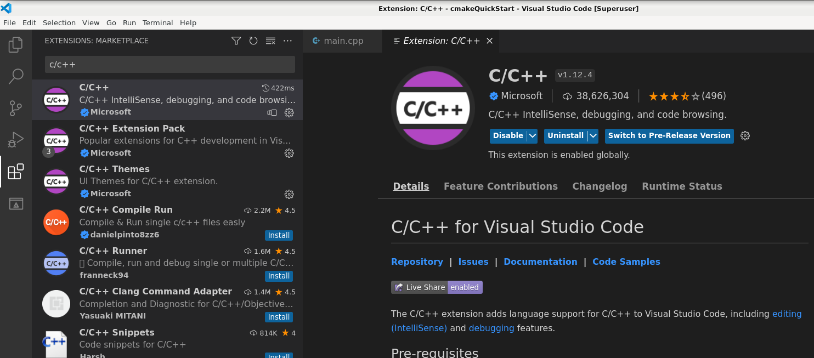
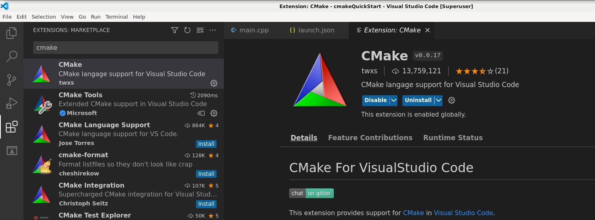
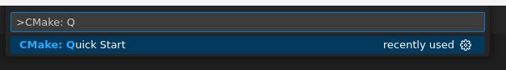
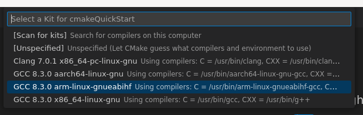
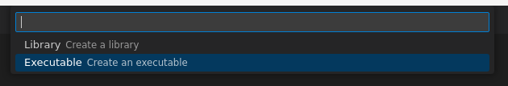
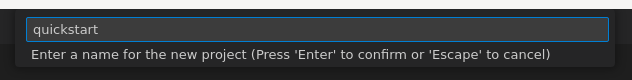

Praca z oprogramowaniem dla Compute Module 4 (Raspberry Pi)
2023-05-07
Rozdział 1 Środowisko i konfiguracja
W zależności od platformy sprzętowej, używanych języków programowania oraz specyfiki projektu, debugowanie pisanego oprogramowania różni się, ale zasadniczo zawsze sprowadza do identycznych możliwości (np. kroczenie po kodzie, czy przeglądanie wartości zmiennych). W tej notce opiszę jak można skonfigurować VSCode do debugowania programu c++ na platformie CM4 ze swojego sprzętu komputerowego po sieci.
Raspberry Pi CM4 to zminiaturyzowana wersja minikomputera Raspberry Pi 4B.
Kompatybilna z gniazdami płytki CM4IO Board. Płytka oparta została na procesorze Broadcom BCM2711 z 4 GB pamięci RAM oraz 32 GB pamięci eMMC. Moduł wyposażony w komunikację bezprzewodową WiFi / Bluetooth.
Dlaczego to jest potrzebne? Korzystanie z takich interfejsów jak I2C, SPI, UART, których na swoim komputerze przeważnie nie posiadamy, czy wykorzystanie możliwości GPIO może sprawiać problemy, które rozwiązuje się dopiero po zrozumieniu problemu. Natomiast zrozumieć problem w kodzie (szczególnie swoim) jest możliwe w momencie, gdy widzimy co się dzieje, a w tym szczególnie pomocny jest debugger.
Z drugiej strony dlaczego nie pisać programu, kompilować go i uruchamiać w IDE na RPI? Kompilacja na Raspberry (i innych platformach Embedded) większych projektów jest czasochłonna (mozolne, żmudne i uciążliwe wręcz). Kompilacja na wielordzeniowym laptopie czy komputerze programów na platformę ARM za pomocą cross-kompilatora wypada znacznie lepiej.
Ze względu na różnorodność systemów operacyjnych i co ważniejsze obecności Windows 7 na świecie (brak już wsparcia Microsoft’u) używać będę VBox’a z obrazem systemu na architekturę amd64 (obecnym na CM4 tylko w architekturze ARM). Wspomnieć mogę jeszcze o WSL obecnym na Win10, czy Dockerze, które mogłyby “trochę” zoptymalizować pracę, ale opis tutaj będzie nieco oldschool’owy.
1.1 Obrazy systemu operacyjnego
Na platformie CM4: Raspberry Pi OS
Release date: September 22nd 2022
Kernel version: 5.10
Debian version: 10 (buster)
Można również pobrać obraz Raspberry Pi OS i uruchomić go na Virtual Box’ie (szczegółowy opis by Emmet, ang.).
1.2 Instalacja Visual Studio Code
VSCode (Visual Studio Code z Microsoft’u) jest obecny na platformach Windows, Linux i macOS. Od lipca 2016 roku Marketplace (oferujący rozszerzenia) urósł pokaźnie, a sama instalacja rozszerzenia sprowadza się do kliknięcia “Instaluj” (w przypadku dobrze zarządzanych projektów).
Instalacja VSCode w VBox’ie, ale najpierw, aby uniknąć przypadkowych błędów, aktualizacja indeksu APT:
Pobieranie curl (jeśli jescze go nie mamy):
Pobieranie klucza i dodawanie do zaufanych w APT:
Dodanie repozytorium VSCode’a:
Aktualizacja indeksu (wyżej dodane zostało repo, dlatego potrzebna jest ponowna aktualizacja):
W końcu instalacja Visual Studio Code:
W przypadku, gdy jedynym użytkownikiem w systemie jest root albo po prostu chcemy uruchomić IDE z poziomu sudoers:
1.3 C/C++ z CMake dla ARM
CMake z pomocą plików CMakeLists.txt służy do zarządzania procesem kompilacji programu, a właściwie to składa konfigurację, czyli pliki z regułami kompilacji dla wybieranego przez użytkownika środowiska, sam nie kompiluje programu. Jego główną cechą jest niezależność od używanego kompilatora oraz platformy sprzętowej.
Instalacja CMake:
Zanim uruchomimy VSCode najpierw zainstalujmy cross compiler (dla ARM):
sudo apt update
sudo apt-get install build-essential binutils-arm-linux-gnueabihf binutils-arm-linux-gnueabihf-dbg Dodatkowo do pracy z Boost czy Qt potrzebujemy bibliotek na docelową platformę, ale najpierw dodajemy do indeksu APT architekturę ARM:
Poniższe polecenia mogą się przydać:
Instalacja bibliotek boost dla ARM:
apt-get install libboost-dev:armhf
apt-get install libboost-system1.67-dev:armhf
apt-get install libboost-thread1.67-dev:armhf
apt-get install libboost-filesystem1.67-dev:armhfInstalacja bibliotek Qt5 dla ARM:
Do pracy w VSCode z c++ zainstalujmy kilka rozszerzeń:
- Rozszerzenie C/C++ (by Microsoft)
- Rozszerzenie CMake (by twxs)
- Rozszerzenie CMake Tools (by Microsoft)
- Rozszerzenie Native Debug (by WebFreak)
Poniżej screeny:


Na początek utwórzmy nowy katalog:
Zobaczmy szablon jaki produkuje rozszerzenie CMake:

Wybierzmy od razu cross compiler:

Wskazujemy, że chcemy konfigurację do kompilacji aplikacji:

Wpisujemy nazwę projektu:

Pod spodem powstało kilka plików (wykonane zostało następujące polecenie cmake):
/usr/bin/cmake --no-warn-unused-cli -DCMAKE_EXPORT_COMPILE_COMMANDS:BOOL=TRUE -DCMAKE_BUILD_TYPE:STRING=Debug -DCMAKE_C_COMPILER:FILEPATH=/usr/bin/arm-linux-gnueabihf-gcc -DCMAKE_CXX_COMPILER:FILEPATH=/usr/bin/arm-linux-gnueabihf-g++ -S/home/user/cmakeQuickStart -B/home/user/cmakeQuickStart/build -G "Unix Makefiles"W katalogu powstał plik CMakeLists.txt:
cmake_minimum_required(VERSION 3.0.0)
project(quickstart VERSION 0.1.0)
include(CTest)
enable_testing()
add_executable(quickstart main.cpp)
set(CPACK_PROJECT_NAME ${PROJECT_NAME})
set(CPACK_PROJECT_VERSION ${PROJECT_VERSION})
include(CPack)1.3.1 O plikach CMakeLists.txt
W zależności od używanych funkcji i ich pojawienia się na przestrzeni czasu, minimalna wymagana wersja cmake:
Nazwa opisywanego projektu:
Dołączenie modułu CTest:
załączenie testów (uwaga: enable_testing jest wołany w include(CTest)) :
Wskazanie z jakich źródeł ma budować aplikację (w dalszej części opisze jak wyszukiwać źródła):
Pakowanie oprogramowania (zautomatyzuje utworzenie zip, instalatora, ale sam tego nie zrobi):
set(CPACK_PROJECT_NAME ${PROJECT_NAME})
set(CPACK_PROJECT_VERSION ${PROJECT_VERSION})
include(CPack)1.3.1.1 Bardziej rozbudowany projekt
Cmake może służyć do zarządzania wieloma projektami. Kompilacja odbywa się kaskadowo w zależności jak sporządzimy pliki CMakeLists.txt. Poniżej opiszę sytuację podobną do tej z Microsoft Visual Studio, czyli rozwiązania i projekty oraz przedstawię kilka informacji o języku cmake.
Wypisywanie informacji na ekranie oraz instrukcja warunkowa:
message("Informacja wypisywana podczas użycia cmake")
if("${CMAKE_BUILD_TYPE}" STREQUAL "Release")
message("Konfiguracja kompilacji Release")
else()
message("Konfiguracja kompilacji prawdopodobnie Debug")
endif()Dodanie flagi do kompilacji plików źródłowych (wszystkich na raz lub pojedynczo):
add_definitions(-DCMAKE_EXPORT_COMPILE_COMMANDS=ON)
add_definitions(
-DUNICODE
-D__USE_LARGEFILE64=1
-DNOMINMAX=1
-DBOOST_ALL_NO_LIB
)Użyte flagi oznaczają:
- CMAKE_EXPORT_COMPILE_COMMANDS - generuje plik compile_commands.json zawierający wszystkie wywołania kompilatora (nie linkera),
- UNICODE - używana strona kodowa w projekcie,
- __USE_LARGEFILE64 - użycie rozszerzonych metod dostępu do plików (większych niż ~2GB, fopen staje się fopen64 itd.),
- NOMINMAX - wykluczenie wbudowanych definicji dla min i max (które będą problemem podczas używania std::min, std::max),
- BOOST_ALL_NO_LIB - gdy z góry wiemy, które biblioteki boost mają zostać dołączone.
Ustawianie standardu języka c/c++:
set(CMAKE_C_STANDARD 11)
set(CMAKE_C_STANDARD_REQUIRED True)
set(CMAKE_CXX_STANDARD 17)
set(CMAKE_CXX_STANDARD_REQUIRED True)Ustawienie katalogu instalacji:
Zmienna CMAKE_CURRENT_SOURCE_DIR wskazuje na katalog główny projektu.
Ustawienie dodatkowych flag kompilatora dla wersji Debug:
Ustawienie dodatkowych flag kompilatora dla wersji Release:
Wskazywanie dodatkowych katalogów nagłówków:
Powyższe katalogi wskazują na projekt (w tym przypadku bibliotekę statyczną) oraz umieszczony w rozwiązaniu googletest.
Wskazywanie katalogów z dodatkowymi bibliotekami:
GoogleTest skompilowany na ARM w głównym folderze projektu, gdzie:
- buildARM - wybrana nazwa folderu dla kompilacji na ARM,
- CMAKE_BUILD_TYPE - to wersja kompilacji (Debug, Release).
Dodawanie katalogów projektów:
gdzie:
- common - będzie biblioteką wspólną dla projektu,
- aplikacja - wynikiem kompilacji jest plik wykonywalny,
- unittests - testy powyższych projektów w GoogleTest.
Dołączanie bibliotek dla całego rozwiązania:
gdzie:
- glibc - podstawowe biblioteki podczas pisania na Linuksie (np. open, read, write, malloc, printf, getaddrinfo, dlopen, pthread_create, crypt, login, exit),
- bsd - zawiera funkcje wypracowane w systemach BSD, a których brak w innych systemach doskwiera.
Rekursywne wyszukanie plików źródłowych:
Polecenie file przyjmuje:
- GLOB < zmienna wyjściowa > < wyrażenie regularne > - wyszukiwanie plików w bieżącym katalogu
- GLOB_RECURSE < zmienna wyjściowa > < wyrażenie regularne > - wyszukiwanie plików w całym katalogu (podkatalogach, itd.)
- READ < nazwa pliku > < zmienna wyjściowa > - wczytanie pliku tekstowego do zmiennej
- WRITE < nazwa pliku > < zawartość > - zapisanie zawartości zmiennej do pliku
- APPEND < nazwa pliku > < zawartość > - dopisanie zawartości zmiennej do pliku
- MAKE_DIRECTORY < folder > - utworzenie katalogu
- REMOVE < plik(i) > - usunięcie pliku
- REMOVE_RECURSE < plik(i) > - usunięcie pliku lub katalogu
- RENAME < ścieżka do pliku > < ścieżka wyjściowa > - przeniesienie pliku lub katalogu
- COPY < plik(i) > < ścieżka wyjściowa > - kopiowanie pliku lub katalogu
Dołączenie podstawowych bibliotek z Boost:
Wskazanie źródeł, z których będzie budowana biblioteka:
Wskazanie źródeł, z których będzie budowana aplikacja:
Dodawanie używanych bibliotek aplikacji dla linkera:
set(LIBS_TO_LINK -lm -lpthread -ldl -lrt -lz -lstdc++fs -lbsd -lzmq -lbson-1.0 -lcrypto -lzstd -lfmtd -lspdlogd)
target_link_libraries(aplikacja PRIVATE common ${Boost_LIBRARIES} ${LIBS_TO_LINK})Dodawanie ścieżki do plików nagłówkowych:
gdzie:
- PRIVATE - określa zasięg widoczności tylko do aktualnego projektu,
- CMAKE_CURRENT_SOURCE_DIR - ścieżka do aktualnego projektu.
Utworzenie folderu wyjściowego przed kompilacją aplikacji:
add_custom_command(
TARGET aplikacja
PRE_BUILD
COMMAND ${CMAKE_COMMAND} -E make_directory "${CMAKE_SOURCE_DIR}/${CMAKE_BUILD_TYPE}${RELTYP}"
)gdzie:
- TARGET - wskazanie celu,
- PRE_BUILD - wykonanie przed budowaniem,
- COMMAND - polecenie,
- CMAKE_COMMAND - pełna ścieżka do CMake,
cmake -E make_directory- utworzenie folderu za pomocą CMake.
Skopiowanie pliku wyjściowego (aplikacji) do innego folderu:
add_custom_command(
TARGET aplikacja
POST_BUILD
COMMAND ${CMAKE_COMMAND} -E copy
$<TARGET_FILE:aplikacja>
${CMAKE_SOURCE_DIR}/${CMAKE_BUILD_TYPE}${RELTYP}/$<TARGET_FILE_NAME:aplikacja>gdzie:
- POST_BUILD - wykonanie po budowaniu,
cmake -E copy- kopiowanie pliku,- CMAKE_SOURCE_DIR - ścieżka rozwiązania (nie projektu),
- CMAKE_BUILD_TYPE - Debug, Release,
- RELTYP - definicja zmiennej, w tym wypadku określam inny folder do budowania na ARM,
$<TARGET_FILE:aplikacja>- nazwa pliku wykonywalnego, biblioteki (z rozszerzeniem),$<TARGET_FILE_NAME:aplikacja>- ścieżka pliku wykonywalnego, biblioteki.
Kompilacja rozwiązania dla ARM:
cmake -S ../../ -DCMAKE_BUILD_TYPE=Release -D CMAKE_C_COMPILER=arm-linux-gnueabihf-gcc -D CMAKE_CXX_COMPILER=arm-linux-gnueabihf-g++ -D RELTYP="ARM"Argument -S ../../ oznacza podanie ścieżki, gdzie znajduje się główny CMakeLists.txt projektu. Definicje CMAKE_C_COMPILER, CMAKE_CXX_COMPILER wskazują kompilatory, natomiast RELTYP nie jest z niczym specjalnym związany. Na potrzeby swoich projektów można definiować własne wartości.
Całość wyglądać będzie następująco:
# Główny CMakeLists.txt (Rozwiązania)
project(major_solution VERSION 0.1.0)
add_definitions(-DCMAKE_EXPORT_COMPILE_COMMANDS=ON)
add_definitions(
-DUNICODE
-D__USE_LARGEFILE64=1
-DNOMINMAX=1
-DBOOST_ALL_NO_LIB
)
set(CMAKE_C_STANDARD 11)
set(CMAKE_C_STANDARD_REQUIRED True)
set(CMAKE_CXX_STANDARD 17)
set(CMAKE_CXX_STANDARD_REQUIRED True)
set(CMAKE_INSTALL_PREFIX "${CMAKE_CURRENT_SOURCE_DIR}/bin")
set(CMAKE_CXX_FLAGS_DEBUG "${CMAKE_CXX_FLAGS_DEBUG} -g")
set(CMAKE_CXX_FLAGS_RELEASE "${CMAKE_CXX_FLAGS_RELEASE} -DNDEBUG")
include_directories(common fmt-9.1.0/include flatbuffers-1.12.0/include spdlog-1.10.0/include nlohmann-3.11.2 zstd-1.5.2/lib googletest-1.12.1/googletest/include)
if("${RELTYP}" STREQUAL "ARM")
message("Arm...")
link_directories(fmt-9.1.0/buildARM/${CMAKE_BUILD_TYPE} flatbuffers-1.12.0/buildARM/${CMAKE_BUILD_TYPE} spdlog-1.10.0/buildARM/${CMAKE_BUILD_TYPE} zstd-1.5.2/buildARM/${CMAKE_BUILD_TYPE}/lib googletest-1.12.1/buildARM/${CMAKE_BUILD_TYPE}/lib)
else()
message("Normal...")
link_directories(fmt-9.1.0/build/${CMAKE_BUILD_TYPE} flatbuffers-1.12.0/build/${CMAKE_BUILD_TYPE} spdlog-1.10.0/build/${CMAKE_BUILD_TYPE} zstd-1.5.2/build/${CMAKE_BUILD_TYPE}/lib googletest-1.12.1/build/${CMAKE_BUILD_TYPE}/lib)
endif()
add_subdirectory(common)
add_subdirectory(aplikacja)
add_subdirectory(unittests)
link_libraries(glibc)
link_libraries(bsd) Biblioteka common:
file(GLOB_RECURSE common_CPP "*.cpp" "*.c")
file(GLOB_RECURSE common_HPP "*.hpp" "*.h")
add_library(common ${common_HPP} ${common_CPP})
target_include_directories(common PUBLIC ${CMAKE_CURRENT_SOURCE_DIR})Projekt aplikacji:
file(GLOB_RECURSE APLIKACJA_SOURCES "*.cpp" "*.hpp" ".c" ".h")
set(PROJ_NAME aplikacja)
project(${PROJ_NAME})
set(Boost_USE_STATIC_LIBS OFF)
set(Boost_USE_MULTITHREADED ON)
set(Boost_USE_STATIC_RUNTIME OFF)
if (CMAKE_BUILD_TYPE STREQUAL "Debug")
set(LIBS_TO_LINK -lm -lpthread -ldl -lrt -lz -lstdc++fs -lbsd -lzmq -lbson-1.0 -lcrypto -lzstd -lfmtd -lspdlogd)
else ()
set(LIBS_TO_LINK -lm -lpthread -ldl -lrt -lz -lstdc++fs -lbsd -lzmq -lbson-1.0 -lcrypto -lzstd -lfmt -lspdlog)
endif ()
find_package(Boost COMPONENTS system thread container bind filesystem REQUIRED)
add_executable(${PROJ_NAME} ${APLIKACJA_SOURCES})
target_link_libraries(${PROJ_NAME} PRIVATE common ${Boost_LIBRARIES} ${LIBS_TO_LINK})
target_include_directories(${PROJ_NAME} PRIVATE ${CMAKE_CURRENT_SOURCE_DIR})
add_custom_command(
TARGET ${PROJ_NAME}
PRE_BUILD
COMMAND ${CMAKE_COMMAND} -E make_directory "${CMAKE_SOURCE_DIR}/${CMAKE_BUILD_TYPE}${RELTYP}"
)
add_custom_command(
TARGET ${PROJ_NAME}
POST_BUILD
COMMAND ${CMAKE_COMMAND} -E copy
$<TARGET_FILE:${PROJ_NAME}>
${CMAKE_SOURCE_DIR}/${CMAKE_BUILD_TYPE}${RELTYP}/$<TARGET_FILE_NAME:${PROJ_NAME}>
)1.3.2 Warto napisać skrypt dla kompilacji
Kompilacja na urządzeniu:
#!/usr/bin/env bash
CONF="Debug"
if [ "$#" -gt 0 ]; then
CONF=$1
fi
mkdir -p "build/${CONF}"
cd "build/${CONF}"
cmake -G "CodeLite - Unix Makefiles" -S ../../ -DCMAKE_BUILD_TYPE=$CONF -DRELTYP=""
make Kompilacja skrośna (cross compile) na ARM: